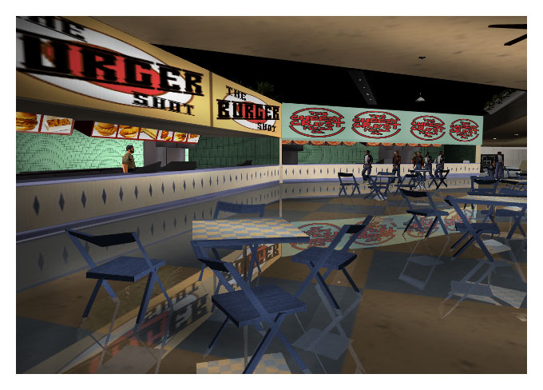
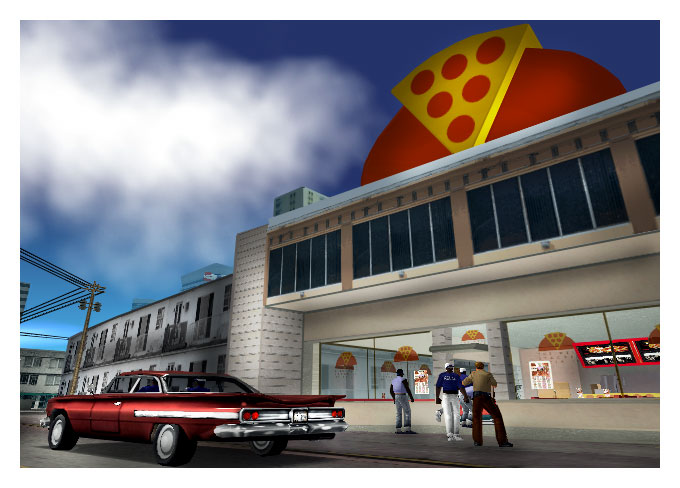

One thing that hasn't changed since the 80s is the fact that people need to eat to survive. And they still do.
And in the 80s it was all about two things - nouvelle cuisine (tiny portions for rich people who spoke French)
and absolute poisonous crap for the rest of us. How things change!
Anyway, right, I never was a ponce, whatever my brother might say, so I always liked to eat basic sort of
stuff. No endangered species on toast for me, unlike certain morons I could mention, so there are my two
favourite eateries in the whole bleeding world. Food fit for a king, and much better than the crap we get in
here. Healthy, nutrituous and never did me no harm.

Mall Food Court - absolutely top idea. Loads of different kinds of processed, deep fried, highly carcinogenic
food under one roof. Bloody marvelous. I went mental first time I came into one of these.

Pizza - All of the basic food groups represented - bread, cheese, tomato and grease. Kids who ran it were a
bunch of spotty prats though.